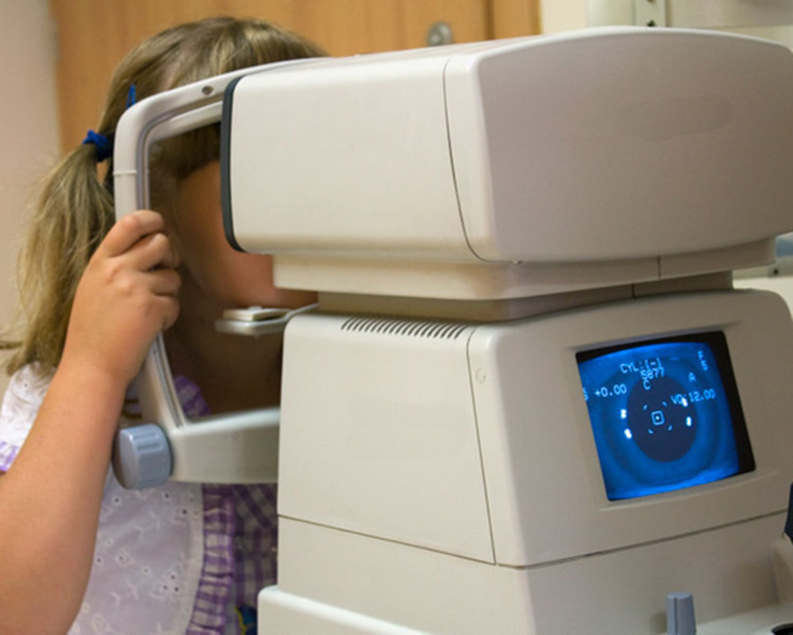
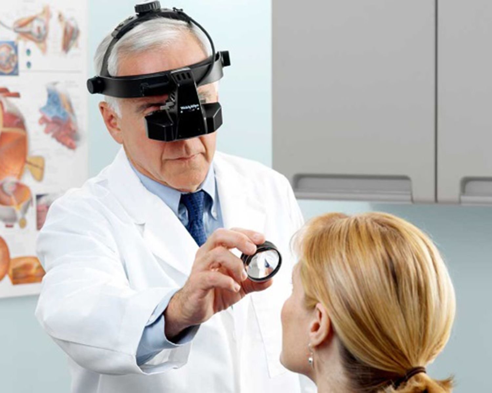

Biomikroskopie
Vyšetření objektivního stavu předního segmenta oka pomocí štěrbinové lampy.

Refraktometrie
Měření refrakčního stavu oka. V dnešní době se nejčastějí použivá automatický přístroj - autorefraktometr. Měření je rychlé a časově nenáročné.

Oftalmoskopie
Vyšetření objektivního stavu zadního segmenta oka a to buď pomoci ručního oftalmoskopa, anebo speciální čočky, díky které je zajištěn zvětšený obraz fundu.